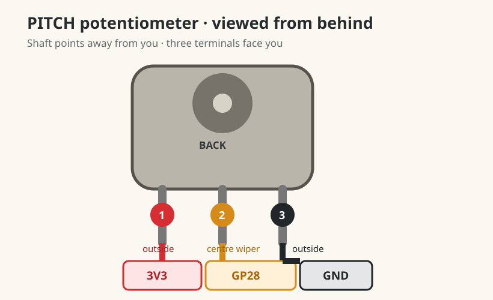

Dub Siren V3 · lesson 0008
Add the Pitch control
Use the Pico’s final exposed analogue input for a third B10K pot. Convert its position into a planned oscillator frequency.
1. Keep Rate and Amount unchanged
- LeftMod Rate · GP26 / ADC0
- RightMod Amount · GP27 / ADC1
- AddPitch · GP28 / ADC2
Keep the button on GP14 and LED on GP15 with its 1 kΩ resistor.
2. Add Pitch with USB unplugged
- Connect Pitch terminal 1, an outside pin, to the shared
3V3(OUT). - Connect centre terminal 2 to
GP28 / ADC2. - Connect terminal 3, the other outside pin, to shared
GND.

3. Map knob position to pitch
pitch_hz = int(100 + pitch.value * 900)0.0becomes100 Hz.0.5becomes550 Hz.1.0becomes1000 Hz.
This lesson prints the planned frequency; it does not create audio yet. MIDI or the later sound engine will use this value.
4. Run all three controls
Run this main.py:
from picozero import Button, LED, Pot
from time import sleep, ticks_diff, ticks_ms
led = LED(15)
button = Button(14)
rate = Pot(26)
amount = Pot(27)
pitch = Pot(28)
last_change = ticks_ms()
light_on = False
smoothed_pitch = pitch.value
last_pitch_hz = -1
while True:
interval = int(500 - rate.value * 450)
smoothed_pitch += (pitch.value - smoothed_pitch) * 0.1
pitch_hz = int(100 + smoothed_pitch * 900)
if abs(pitch_hz - last_pitch_hz) >= 5:
print("Pitch:", pitch_hz, "Hz")
last_pitch_hz = pitch_hz
if button.is_pressed:
now = ticks_ms()
if ticks_diff(now, last_change) >= interval:
light_on = not light_on
last_change = now
led.value = amount.value if light_on else 0
else:
led.off()
light_on = False
last_change = ticks_ms()
sleep(0.01)smoothed_pitch is a low-pass filter. Each loop keeps 90% of the previous result and adds 10% of the new reading. Fast electrical jitter is softened, while a deliberate knob turn still catches up quickly. The five-Hertz print threshold then suppresses the small remainder.
5. Prove three-way independence
- Turn Pitch: Shell frequency changes; LED speed and brightness do not.
- Hold Trigger and turn Rate: speed changes; printed pitch stays nearly fixed.
- Turn Amount: brightness changes; speed and pitch stay fixed.
- Release Trigger: LED stops immediately; Pitch can still be read.
Without looking at the diagram, name the three ADC pins and their assigned controls.
Pitch numbers decrease clockwise
Unplug USB and exchange only the Pitch pot’s two outside wires. Keep its centre wire on GP28.
Pitch still jumps by more than 10 Hz untouched
Unplug USB and reseat the Pitch pot’s 3V3, GP28, and GND connections. A jump much larger than the original 800–814 Hz range suggests a loose temporary connection rather than normal noise.
6. Notice the hardware limit
GP26, GP27, and GP28 are now occupied. The final Feedback and Tempo pots need the purchased 74HC4051 multiplexer. That component lets several pots share one ADC; it comes in a later lesson.
Done means
- Pitch reaches roughly 100–1000 Hz clockwise.
- Rate, Amount, and Pitch change only their own property.
- Trigger remains responsive.
- You know all three exposed ADC inputs are now used.
Tell your teaching agent: the lowest and highest Pitch readings, whether clockwise increases them, and whether all three controls remain independent.